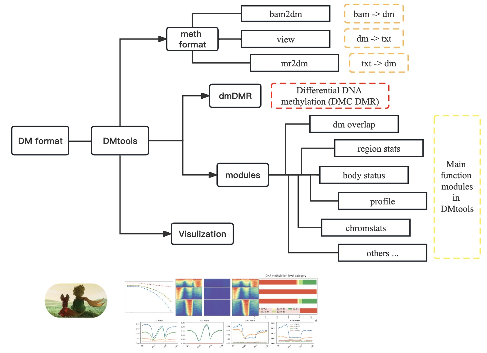

The Basic DNA Methylation (DM) format and DMtools
{kind=link}
The Basic DNA methylation (DM) format is a compressed binary indexed DNA methylation format for storing DNA methylation levels with methylation context, strand, coverage, and ID information. Compared with the commonly used file formats for DNA methylation, the storage space of the DM format is reduced by 80%-90%. Besides, based on the DM format file, users can realize fast random access and calculate DNA methylation levels of any chromosome region. Correspondingly, we provided dmtools, a manipulation tool in DM format. The dmtools implements various utilities for post-processing DNA methylation levels with DM format, such as fast and random access, calculation of DNA methylation profile across genes, and differential DNA methylation analysis. Moreover, we also provided a python package pydmtools for processing DM format files.
Installation
Please download and install the tools (see Install)
The functions you can use dmtools to do:
DMtools: tools for DNA methylation in dm format, and prepare DM simalar bigwig file for browser.
bam2dm: Calulate DNA methylation level (ML) across whole genome output dm format.
Differential analysis: Perform differential analyses with auto defined regions or predefined regions.
PlotMeth: Plot DNA ML profile, heatmap or boxplot across genes/TEs/etc.
pydmtools: A python wrapper for dmtools.
Contents
methylation
While developing dmtools, we continuously strive to create software that fulfills the following criteria:
new methlation dm format with index can calculate DNA methylation level quickly.
calculate DNA methylation level based on sorted BAM file for single base or chromosome region and genes.
enable customized down-stream analyses, espacially with visulization
generation of highly customizable images (change colours, size, labels, file format, etc.)
Citation
Please cite DMtools as follows:
Zhou Q, Zhou C, Zhu Z, Li G: The Basic DNA Methylation (DM) format and DMtools
Tip
For feature requests or bug reports please open an issue on github.